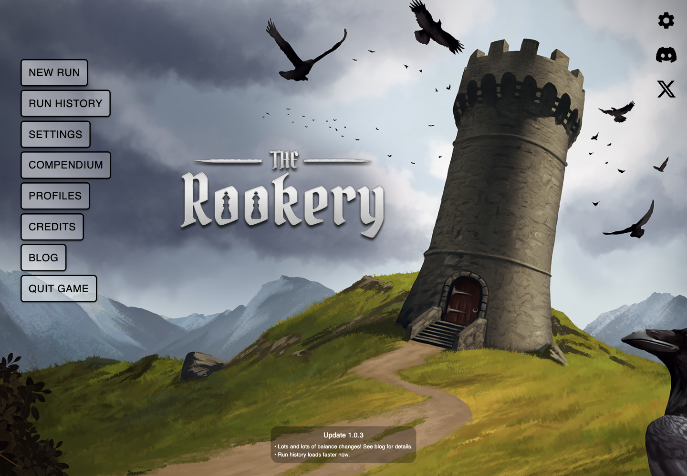
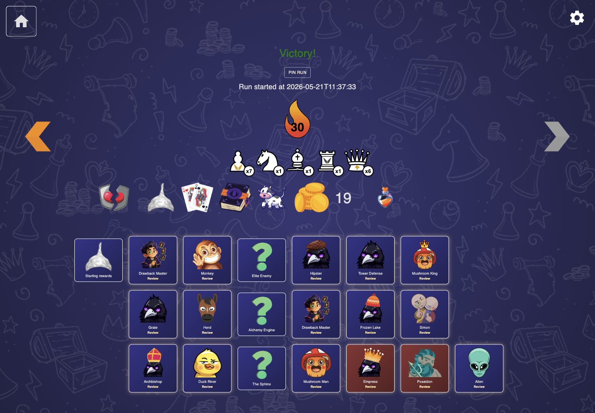
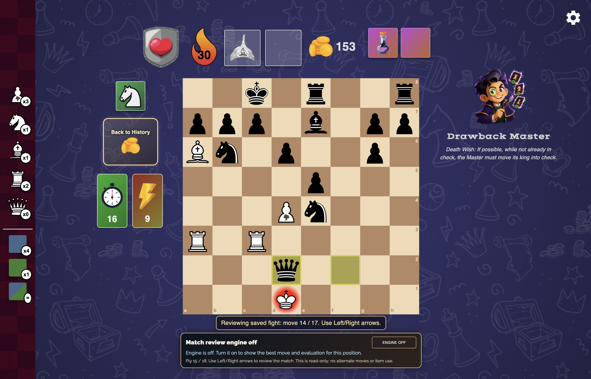
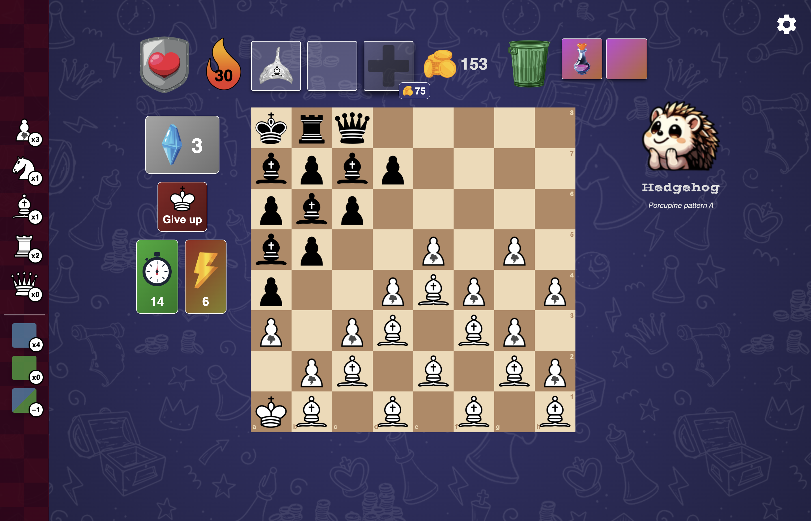
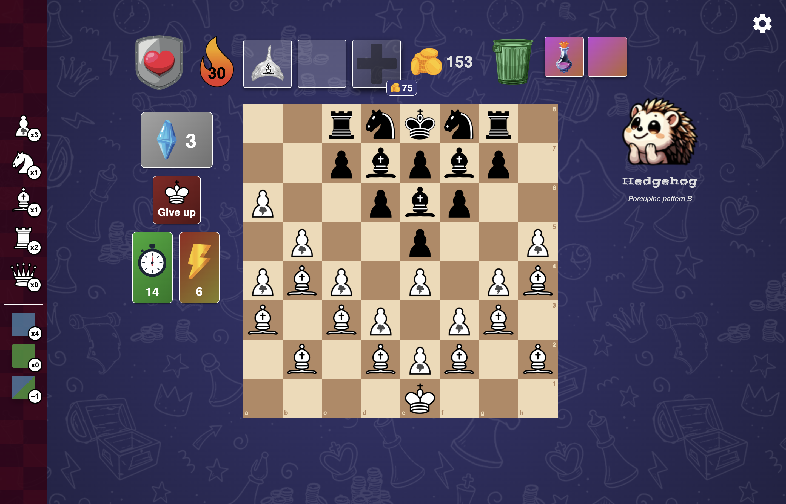
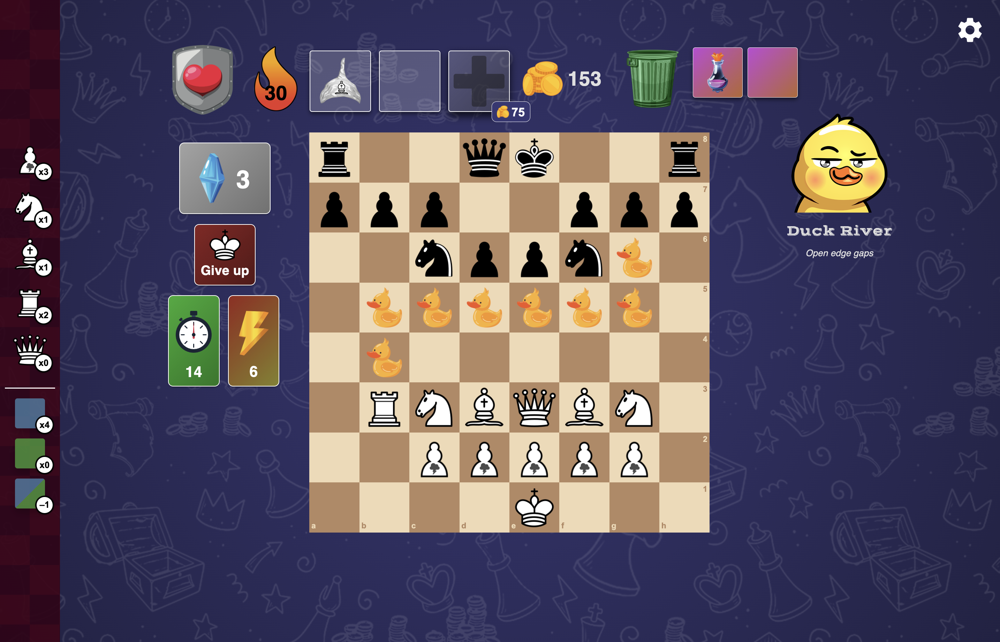
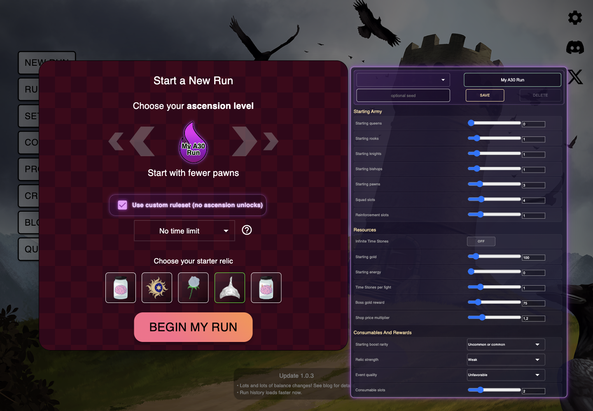

The Rookery Modded
This page shows what changed compared with vanilla The Rookery: new fight types, new consumables, custom runs, replay tools, item control, and small quality-of-life upgrades.
Rewatch completed fights from Run History.
Finished fights can be opened again, browsed move by move, and optionally analyzed by the engine. Reviews are for watching only, so they do not spend items or change the run.

Fight cards became review buttons
When replay data is available, old fight cards show a small Review label and can reopen the board.
Pin favorite runs
Pinned runs keep their fight replays longer, so memorable routes can be watched later.
Engine is optional
Match review opens with the engine off. Turn it on only when you want a best-move arrow and evaluation.
Drawback Master fights with one hidden AI rule.
A new wizard opponent can appear on special formations. The Master secretly plays under a drawback, and the rule is revealed during the fight or when the match ends.
Three public rule families
The player sees Insane, Hard, and Medium card pools, but not the exact active drawback at first.
Special starting formations
Master fights use Chess960-style and castled enemy setups instead of ordinary encounter maps.
Rule reveal in review
After the rule opens, the fight panel shows the drawback name and a player-readable description.


Master drawback pools
Discount means how much easier the encounter is considered after the Master accepts that drawback.
If possible, after you capture, the Master must move backward. For black, backward is toward rank 8.
If possible, while not already in check, the Master must move its king into check.
The Master cannot move a piece to an adjacent square.
The Master can only capture to the left.
The Master can't move a piece that is attacked by the enemy queen.
The Master can only move knights or pieces that are adjacent to them.
The Master's non-pawn pieces can only move to squares whose rank-mirrored square is occupied.
If possible, the Master must move farther right than its previous destination. For black, right means h -> a files.
If possible, the Master must alternate pawn and non-pawn moves.
If possible, the Master must move to the square you moved from.
The Master can't move a piece that is attacked.
The Master cannot move to a square that several of its pieces could move to.
If possible, after the Master captures, that piece must move back to the square it came from.
The Master cannot cross the vertical middle line.
If the opponent captures: the Master's adjacent pieces can't move for 1 turn.
The Master cannot immediately recapture on the square where you just captured.
The Master can only capture if the Master's king was moved in the last 3 moves.
After you make a non-capturing move, the Master cannot move to that destination square.
On the Master's odd-numbered turns, it cannot capture.
If possible, the Master must alternate pawn and non-pawn moves, except it can also move the same piece again.
The Master can only capture from dark squares.
The Master can only capture with piece types that you have already captured with.
On the Master's even-numbered turns, it cannot capture.
If possible, the Master must move a piece adjacent to the destination of its last move.
After the Master captures, it cannot capture on its next move.
If possible, after the Master moved forward twice in a row, it must move backward. For black, forward is toward rank 1.
The Master can only capture a piece if it could capture that piece in two different ways.
After you capture a piece type, the Master can only move pieces at least that valuable.
The Master can't capture on adjacent squares.
The Master cannot move a shorter distance than the previous move.
The Master must move a random piece type every move.
The Master cannot move pieces that are directly behind its own pawns.
If possible, the Master must capture.
The Master can only make non-capturing moves to the four center files.
If possible, the Master must move pawn or non-pawn, depending on what you did.
The Master must move forward, if possible.
The Master cannot move the piece type you just moved.
If possible, the Master must alternate destination-square colors.
If possible, the Master must move an attacked piece.
The Master cannot move its king.
The Master can only capture a piece type if it was able to capture that piece type on an earlier turn.
The Master cannot move to a square it previously moved from.
If possible, the Master must move to a light or dark square, depending on the color you moved to.
The Master cannot move the same piece type twice in a row.
The Master's non-pawn pieces cannot move adjacent to each other, and it cannot castle.
The Master can capture only with pieces that are currently attacked.
Mystery Contract: sign for your own drawback.
Some events now offer a Fair Deal or a Dark Deal. If signed, the next eligible fight gives the player a random drawback and increases the prize for surviving it.
Mystery Contract
Someone has prepared two contracts with your name already written in. The bargain is simple: suffer the rule, claim the prize, or leave the page untouched.
Medium contracts
A smaller burden with better gold than a normal fight.
Hard contracts
A harsher rule with stronger reward pressure, including extra rare reward potential.
The enemy does not know
The opponent plays normally; it does not secretly exploit the player's contract.
Contract drawback pools
Fair Deal draws from Medium rules. Dark Deal draws from Hard rules.
You can't move a less valuable piece than your opponent moved.
You can't move pieces less valuable than the opponent has captured.
Your capturing moves can't have a distance of more than 2.
You can't immediately recapture.
You can't move to a square you've captured on.
If possible, you must move into check unless you are already in check.
You can't capture a piece that just made a non-capturing move.
If possible, you must move an attacked piece.
A piece can't capture if it has several capturing options.
You can't move a piece that is attacked by the enemy queen.
You can't make non-capturing moves adjacent to an opponent's piece.
You can't move adjacent to an opponent's piece of the same type.
You can't move the piece type your opponent moved.
You can't capture twice in a row.
You can't move to a square you've moved from before.
Your non-pawn pieces can't move adjacent to each other.
You can't move laterally.
If the opponent captures, adjacent pieces can't move for 1 turn.
You can only capture a piece type if the opponent moved it in the last 3 moves.
You must move to light or dark squares depending on what the opponent did.
You can't capture on even moves.
You can't capture on odd moves.
You can only capture from dark squares.
You must move pawn or non-pawn depending on what the opponent did.
You cannot drop reinforcements this fight.
You cannot use consumables or boosted moves this fight.
Start this fight with 0 energy. Energy boosts are reduced.
If you moved forward twice in a row, you must move backward if possible.
You must alternate pawn and non-pawn moves, except you can also move the same piece again.
You can only capture to the left.
You can only capture if your king was moved in the last 3 moves.
If you've captured, you must capture again if possible.
A piece can only capture if it is attacked.
If you've captured, that piece must move back to the square it came from if possible.
You must alternate destination-square colors.
You must capture if possible.
You can't capture on adjacent squares.
If possible, you must move adjacent to the enemy king.
You can't move shorter than the opponent's previous move.
Your non-starter, discardable relics are inactive this fight.
Your move limit for this fight is cut in half, rounded up.
Familiar maps can roll fresh shapes.
Several encounter families now have extra formations. These keep the map identity, but shuffle the tactical texture so repeated runs are less predictable.
{kind=link}

Porcupine Pattern A
A new Hedgehog-style shell with diagonal spikes and a denser tactical texture.
{kind=link}

Porcupine Pattern B
A second Hedgehog variant with a compact royal spine and different white pressure lanes.
{kind=link}

Duck River: Open Edge Gaps
A river bend where the ducks leave room on the edge files, changing how the attack can start.
Four new tactical items.
These are added to the normal item pool with custom icons and sounds. Some are fast, and some spend your move like a real board action.

Timekeeper Flask
Adds 10 moves to the current fight timer.

Pawn Ladder
Choose an empty square, then build a pawn ladder up that file.

Peasant Revolt
Summons 7 pawns onto empty squares on ranks 5-7.

Transparent Ink
Marks one square so pieces can move through it for the rest of the fight.
Build your own ruleset and save it.
The New Run screen now has a custom mode. Start from an ascension baseline, tweak individual drawbacks, save a ruleset name, and optionally paste a seed.

Right-side rules panel
Custom rules open next to the normal start-run card instead of stretching it downward.
Purple custom flame
Custom runs use a purple flame badge with the ruleset name instead of a numbered ascension flame.
No normal unlocks
Winning a custom run does not unlock the next normal ascension.
More ways to manage your inventory.
Several vanilla item moments were made clearer or more flexible: selling, shop rolls, relic timing, and a few balance values.
 Sell unwanted items
Sell unwanted items
Discardable relics and consumables can be thrown away for 25% of their value, with the gold shown before selling.
 Relic ON/OFF
Relic ON/OFF
Most discardable relics can be turned off before or during a fight. Starter and undiscardable relics stay always on.
 Smarter shops
Smarter shops
Shops try to show items you could afford after selling discardable items, including Greed Potion value.
 Wedding Ring
Wedding Ring
Wedding Ring now costs 3 energy.
 Elixir
Elixir
Elixir is now a fast consumable.
 Encounter variety
Encounter variety
Many encounter families have extra formations and more balanced sampling, so repeated runs feel less samey.